10 部片单 · 恐怖 / 科幻 / 惊悚 / 悬疑 / 剧情
| # | 片名 | 类型 | 评分 / 状态 |
|---|---|---|---|
| 01 | 月球 | 科幻 / 惊悚（英国 · 一个人的三年） | 8.5 / 90% / 67 |
| 02 | 黄海 | 惊悚 / 剧情（韩国 · 一条看不见的海路） | 8.5 / 88% / 70 |
| 03 | 一次别离 | 剧情 / 悬疑（伊朗 · 一场没有反派的官司） | 8.8 / 99% / 95 |
| 04 | 皮囊之下 | 科幻 / 惊悚（英国 · 一具借来的身体） | 7.4 / 84% / 83 |
| 05 | 囚徒 | 惊悚 / 悬疑（美国 · 失踪的第六天） | 8.1 / 81% / 70 |
| 06 | 星际穿越 | 科幻 / 剧情（美国 · 土星旁边那个洞） | 9.4 / 72% / 74 |
| 07 | 小丑回魂 | 恐怖 / 惊悚（美国 · 德里镇的每二十七年） | 7.3 / 85% / 69 |
| 08 | 准备好了没 | 恐怖 / 惊悚（美国 · 新婚之夜的捉迷藏） | 6.6 / 89% / 64 |
| 09 | 黑色电话 | 恐怖 / 惊悚（美国 · 地下室里的那台电话） | 7.0 / 81% / 65 |
| 10 | 危笑 | 恐怖 / 悬疑（美国 · 冲着你的那个笑） | 6.5 / 79% / 68 |
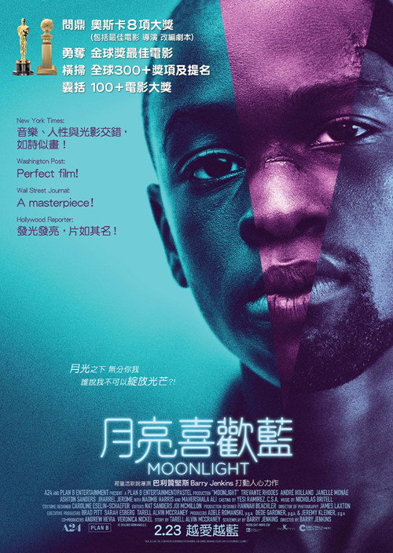
月球 Moon
「距离家二十五万英里，最难面对的……是你自己。」
剧情梗概
月球基地塞伦站只剩下一个人：山姆·贝尔，某能源公司的三年合同工，负责照料把氦-3 送回地球的采矿设备。陪着他的只有一台叫 GERTY 的人工智能。合同只剩两周的时候，他在基地外出了事故。等他醒过来，站里有另一个他自己。
亮点
- 邓肯·琼斯的长片处女作，成本约 500 万美元；拿下英国电影学院奖（BAFTA）最佳英国处女作奖。
- 全片几乎只有一个演员：山姆·洛克威尔一人分饰两份（以及更多份）山姆·贝尔，另外一位「演员」是凯文·史派西配音的机器人 GERTY。
- 邓肯·琼斯是大卫·鲍伊的儿子，一直用自己的名字做电影——本片没有任何一处借父亲的名气。
- 几乎没有 CGI：月球表面与采矿车用的是传统微缩模型，向《2001太空漫游》《异形》的实体特效传统致敬。
- 配乐由 Clint Mansell（《梦之安魂曲》）操刀，那段反复出现的钢琴动机几乎承担了全片的情绪。
- 烂番茄 90% / Metacritic 67 / 豆瓣 8.5——影评人与观众的落差主要在于「太安静」。
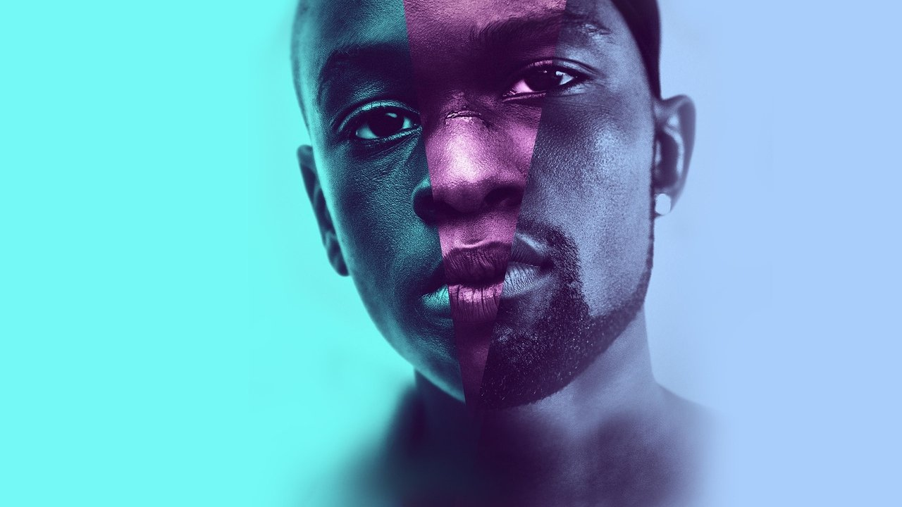
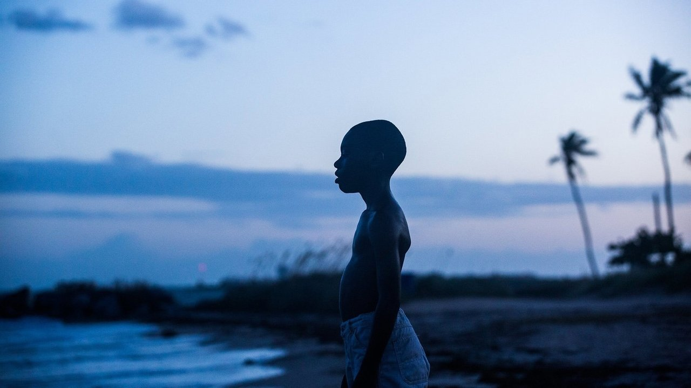
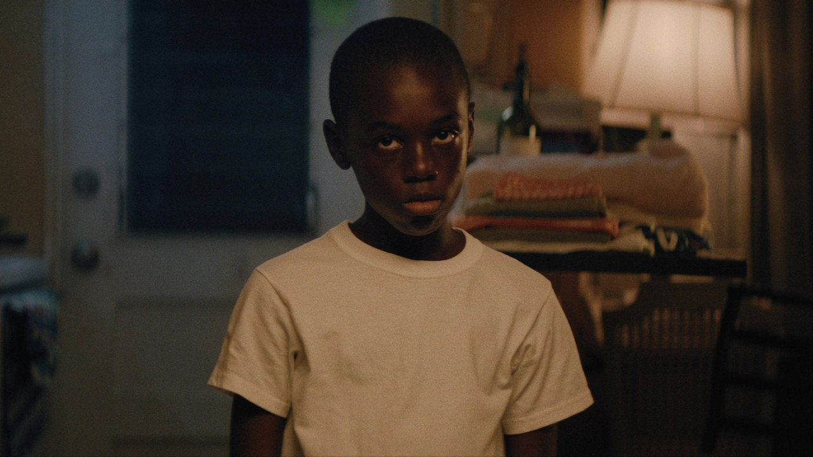
导演与主创 · 他们的历史作品
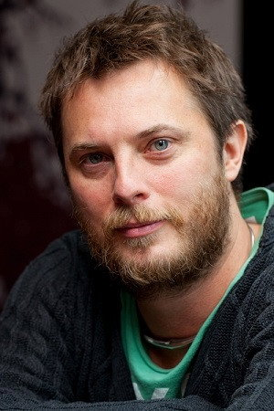
 源代码
源代码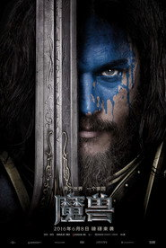
魔兽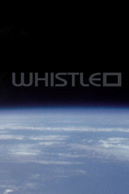
口哨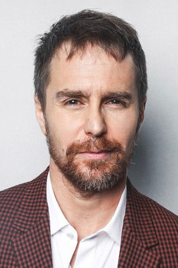
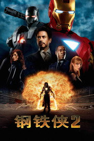
钢铁侠2 三块广告牌
三块广告牌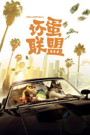
坏蛋联盟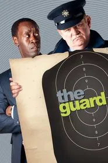
国民警卫队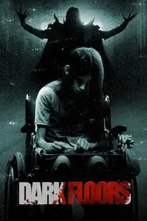
黑暗楼层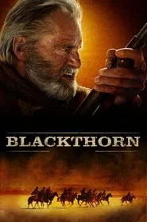
黑荆棘短评（轻微剧透）
《月球》真正的转折不在发现另一个自己，而在那条回地球的通讯。山姆以为自己一直在跟妻子视频，其实那是三年前的存档，而另一个克隆体也在收着同样的一批信。琼斯把「用克隆体做三年轮班」拍成了一场工伤事故：公司没有反派的脸，只有一份合同。最冷的是 GERTY——它从头到尾没违背过任何协议，它只是在帮。轻微剧透：最后活着回地球的那个人带着真相，而真相不会改变任何一张报表。
为什么值得一看
想看「一个人能不能撑起一整部科幻片」的人；喜欢《2001太空漫游》《恐怖游轮》那种封闭空间叙事的观众。含少量血腥与粗口，暴力很低；节奏缓慢，适合一口气看完。内地未引进，流媒体可看。看完想继续：《源代码》《火星救援》《银翼杀手2049》。
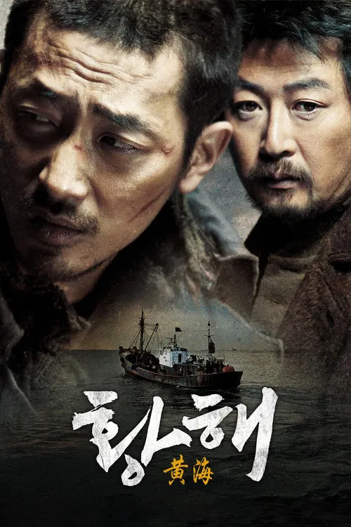
黄海 The Yellow Sea
「那条线，他本来就不该跨过去。」
剧情梗概
延边的出租车司机久南欠了一屁股债，妻子去韩国打工之后六个月音讯全无。为了还债，他接下一件事：偷渡过黄海到首尔，替人杀掉一个人。他身上只有一把从家里带出来的旧锤子和一把刀。他以为自己是去找妻子的，其实是被送去当替罪羊的。
亮点
- 罗泓轸《追击者》之后的第二部长片，入围第 64 届戛纳电影节午夜展映单元；成本约 820 万美元。
- 河正宇凭此片拿下百想艺术大赏等影帝；金允锡演的绵正学是全片的另一极——笑得越随意，越让人发冷。
- 前半小时的延边雪地赌局、后两小时的首尔街头，构成一条完整的「越界」路线：语言、身份、法律，他一样都没有。
- 暴力场面以实拍为主：几乎没有剪辑掩护的斧头与车祸，韩国分级 18 禁。
- 全片不停：抓捕、逃亡、反转、再逃亡，节奏是同期韩国犯罪片里最快的一档。
- 豆瓣 8.5 / 烂番茄 88%，但 Metacritic 只有 70、IMDb 7.3——观众明显高于专业影评。
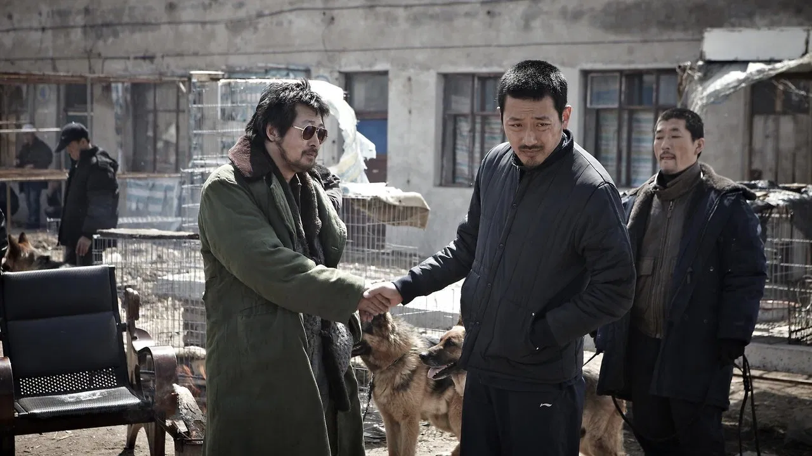
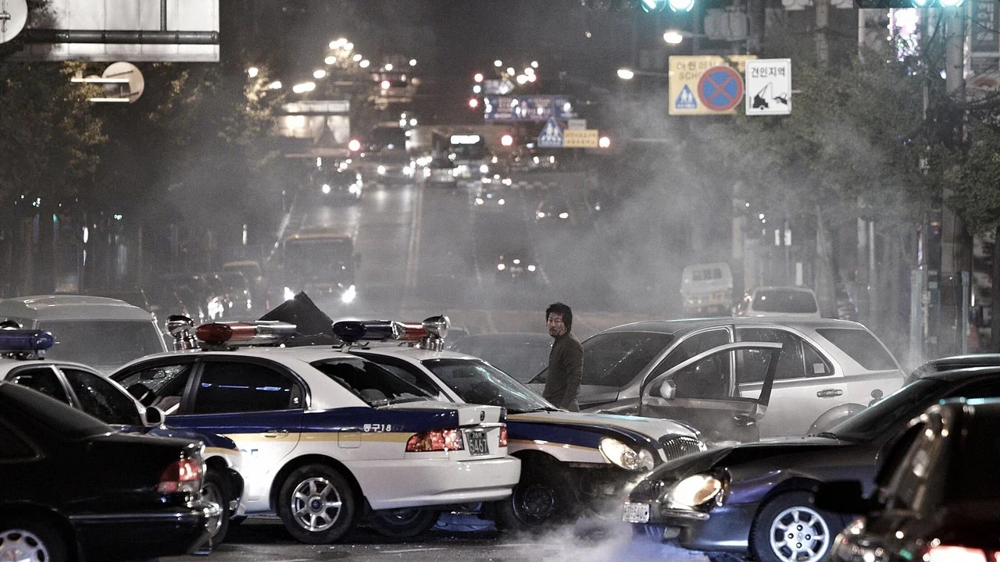
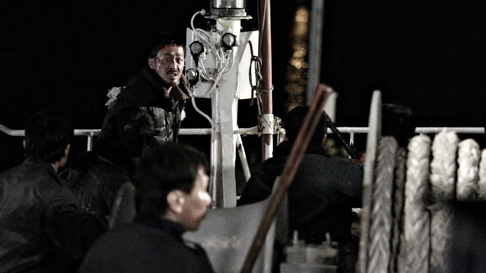
导演与主创 · 他们的历史作品

 哭声
哭声 追击者
追击者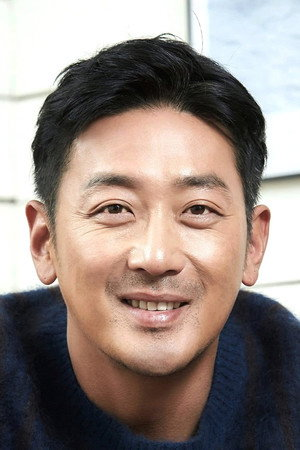
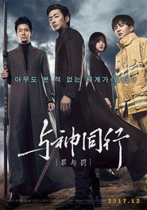
与神同行：罪与罚追击者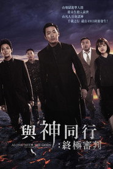
与神同行2：因与缘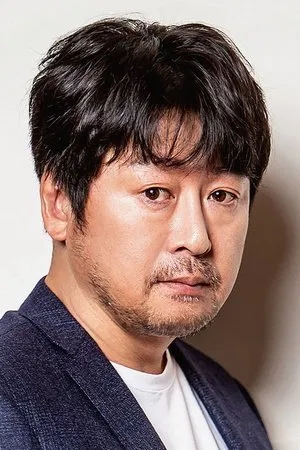
追击者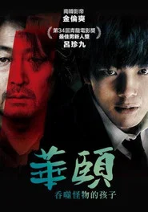
华颐：吞噬怪物的孩子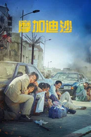
摩加迪沙短评（轻微剧透）
轻微剧透：真正的转折不是凶手是谁，而是「雇主到底有几拨」。久南从头到尾都被两批人当成同一枚棋子——一批要他杀人，一批要他去死。罗泓轸拍的不是追凶，是「一个人被所有人放弃之后还剩多少力气往前走」。最狠的是结尾：他终于坐上了回去的那条船，驾驶室里另一个人正在打瞌睡，没有人知道他经历过什么，也不需要知道。
为什么值得一看
想看罗泓轸（后来拍《哭声》的那位）怎么把追击写成宿命的人；能接受写实暴力与器官镜头的观众（18+）。含大量砍杀与车祸，血腥写实不美化。内地未映，流媒体可看。看完想继续：《追击者》《哭声》《新世界》。
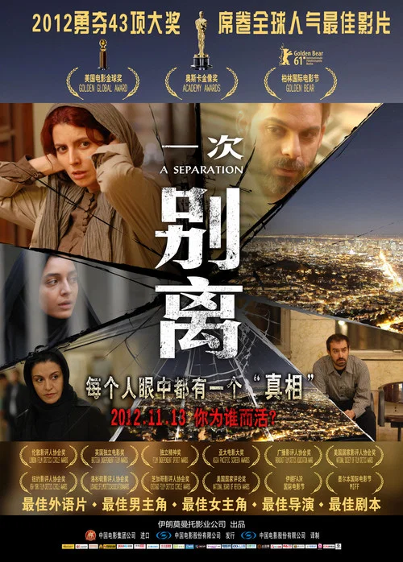
一次别离 A Separation
「你要我发誓吗？」
剧情梗概
西敏想带女儿离开伊朗，丈夫纳迪不肯丢下患阿尔茨海默症的父亲。离婚没成，她搬回娘家。为了照顾父亲，纳迪雇了一个叫瑞茨的女人。某天他提前回家，发现父亲被绑在床上、瑞茨人不见了；随后传来她流产的消息。到底是谁推了她，成了一场没有答案的争执核心。
亮点
- 阿斯哈·法哈蒂自编自导，第 61 届柏林电影节金熊奖最佳影片，男女演员团体各获一座银熊。
- 第 84 届奥斯卡最佳外语片——伊朗电影第一次拿到这座奖；同年还提名了最佳原创剧本。
- 全片没有配乐（只在片尾出现），所有紧张感来自门、楼梯、走廊与两个人说话的节奏。
- 手持质感的摄影几乎不给人喘息，这种「跟拍到墙角」的方式后来被很多人模仿。
- 蕾拉·哈塔米、萨瑞·巴亚特（瑞茨）的表演常被当成教科书：没有一个角色是无辜的，也没有一个是坏人。
- 烂番茄 99% / Metacritic 95，是 2011 年全球评分最高的影片之一——本期评分最高的一部。
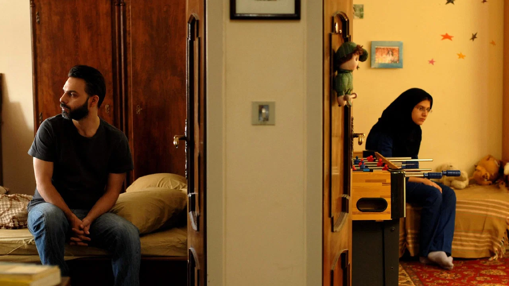
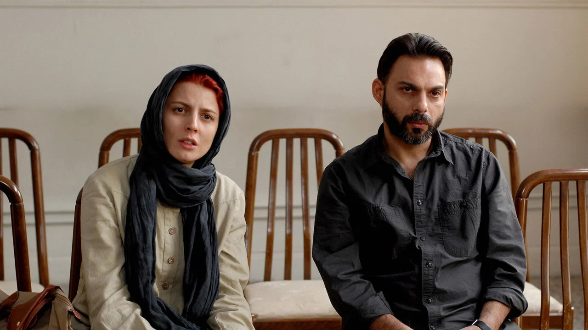
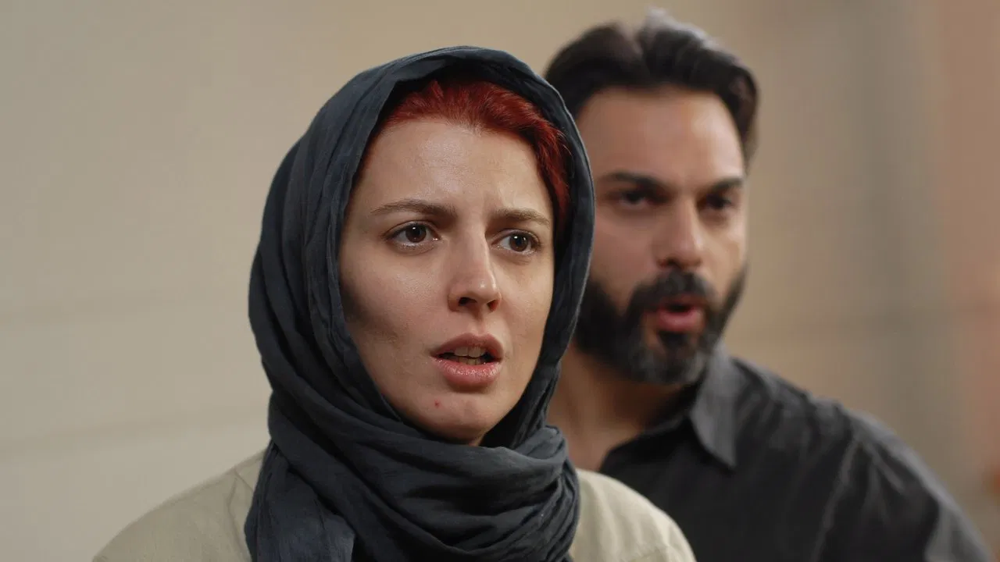
导演与主创 · 他们的历史作品
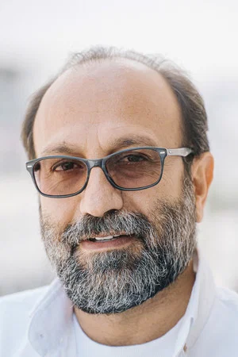
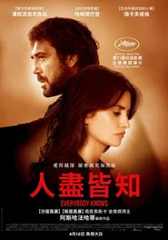
人尽皆知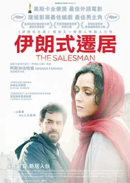
推销员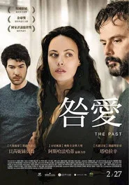
过往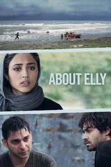
关于伊丽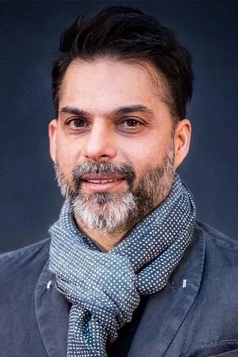
 地下6号
地下6号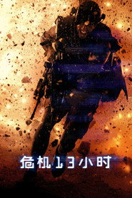
危机13小时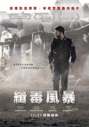
650万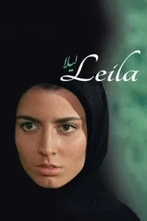
女人花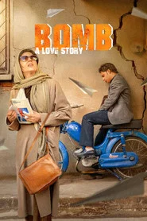
轰炸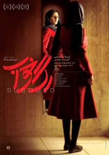
顺从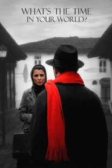
你的世界几点短评（轻微剧透）
轻微剧透：真正的悬念不是「谁推了她」，而是纳迪其实早就知道答案、却选择不说。法哈蒂的高明在于他给每个谎言都配了理由：为了保护父亲，为了保住女儿，为了保住那段「还过得下去」的婚姻。女儿特尔梅最后在法官面前说出要跟谁生活——镜头停在她父母站在走廊两侧，谁也没有进去。这不是悬疑的终点，是道德的开始。
为什么值得一看
想看「用一个家庭讲清楚整个社会」的人；能接受没有配乐、没有大场面、全靠对白推进的观众。无血腥镜头，含推搡与争执；建议安静地一次看完。内地未映，流媒体可看。看完想继续：《推销员》《关于伊丽》《过往》。
皮囊之下 Under the Skin
「来我这里。」
剧情梗概
一个外形是年轻女人的存在，开着面包车在格拉斯哥的街头游荡。她搭话、示意对方上车、把人带进一间什么都没有的黑房子。她不是人类，她在学怎么做人——学到一半的时候，出了岔子。
亮点
- 乔纳森·格雷泽（《重生》《利益区域》）自编自导，改编自米歇尔·法贝尔的同名小说。
- 街头搭讪的段落用隐藏摄像机拍：对面那些男人大多不是演员，很多是拍完才知道自己在电影里。
- Mica Levi 的配乐用中提琴滑音撑起整部片，被公认为近十年最重要的电影配乐之一。
- 斯嘉丽·约翰逊当时还是漫威里的黑寡妇，本片是她同期完全相反的极端——角色连名字都没有。
- 黑房子里那段下沉的戏是全片最著名的意象：镜头一动不动，人在黑色液体里往下沉。
- 烂番茄 84% / Metacritic 83，但 IMDb 只有 6.3、豆瓣 7.4——本期「影评人与观众落差」最明显的一部。
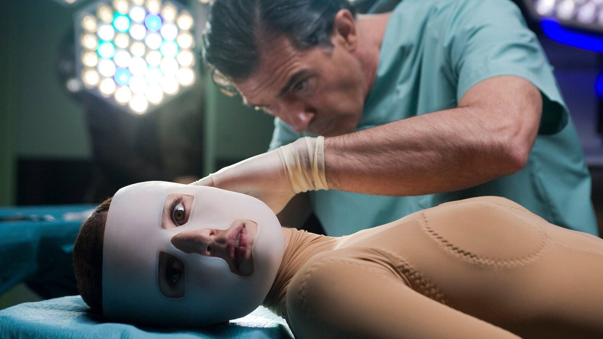
导演与主创 · 他们的历史作品
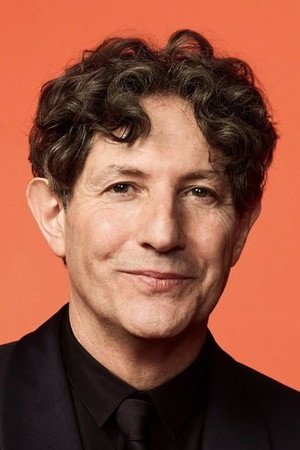
 利益区域
利益区域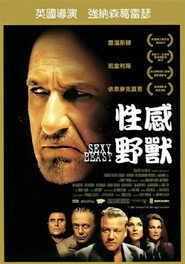
性感野兽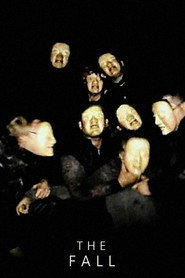
坠落 超体
超体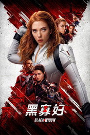
黑寡妇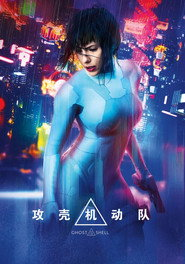
攻壳机动队 美国队长3
美国队长3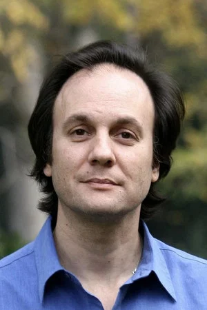
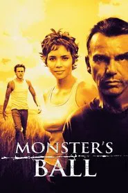
死囚之舞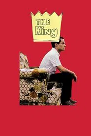
国王短评（轻微剧透）
轻微剧透：真正的转折在她放走那个相貌特殊的男人。她在他身上第一次「被当成人看见」，于是整个任务失效。格雷泽拍的不是入侵，是同化：镜子、商场、雨、草莓奶昔——她学不会的东西太多，而学会的那一件恰好是致命的那件。结尾不细说，只提醒一句：最后被毁掉的是身体，不是谜底。
为什么值得一看
想体验「几乎不用台词解释、靠画面和声音压住你」的人；能接受极慢节奏、几乎没有对白、含裸露镜头的观众（18+）。不建议当作爆米花片。内地未映，流媒体可看。看完想继续：《利益区域》《重生》《降临》。
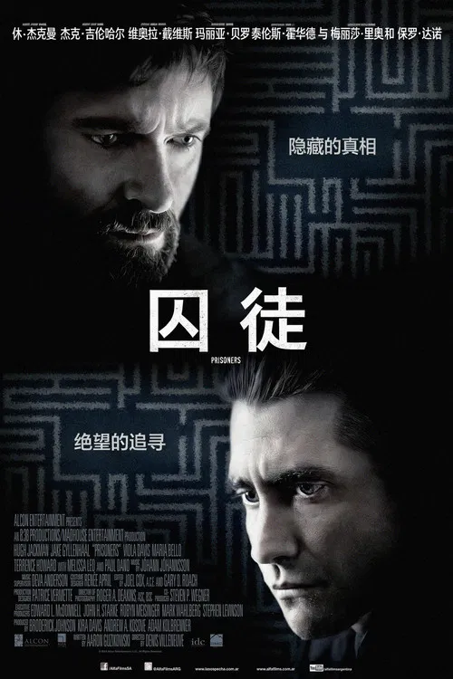
囚徒 Prisoners
「每一分钟都很重要。」
剧情梗概
感恩节下午，两家人的两个小女儿在街区里失踪。唯一的线索是一辆停在路边的旧房车。探员洛基抓到了房车司机亚历克斯，可证据不足只能放人。一位父亲决定不再等警察。
亮点
- 丹尼斯·维伦纽瓦（《降临》《银翼杀手2049》《沙丘》）登陆好莱坞的第一部英语长片。
- 摄影罗杰·狄金斯（《肖申克的救赎》《1917》《银翼杀手2049》），全片压在宾州连绵的阴雨和泥地里。
- 配乐 Jóhann Jóhannsson，低音像一种持续不停的心跳。
- 吉伦哈尔给洛基加了一个几乎贯穿全片的细节：不停地眨眼——他是唯一还在按流程做事的人。
- 首评被 MPAA 评为 NC-17（暴力内容），删剪后才改成 R 级，导演版更狠。
- 成本 4600 万美元，北美票房 6100 万、全球约 1.22 亿美元；豆瓣 8.1 / IMDb 8.2。
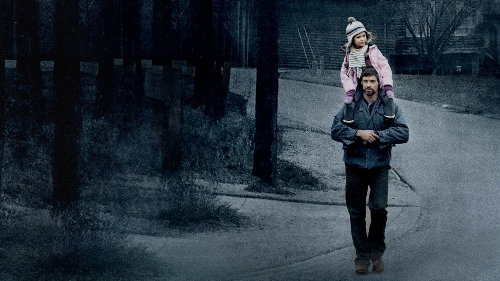
导演与主创 · 他们的历史作品

 降临
降临 银翼杀手2049
银翼杀手2049 沙丘
沙丘 边境杀手
边境杀手
 死亡幻觉
死亡幻觉 夜行者
夜行者 十二宫源代码
十二宫源代码短评（轻微剧透）
轻微剧透：真正的转折不是凶手是谁，而是两个父亲的对照。一个用教堂、枪和雨水把自己的女儿找回来；另一个（失踪双胞胎的父亲富兰克林）选择「至少还有一个孩子活着」。洛基那条线其实已经破案了，只是他来晚了。最后那声哨响没有答案。维伦纽瓦最狠的地方在于他让信仰、父爱与酷刑共用同一套灯光，观众分不清自己到底在支持谁。
为什么值得一看
想看维伦纽瓦在《降临》之前怎么练手的人；能接受儿童失踪、虐待与压抑氛围的观众（强冲击）。暴力写实但不洒血浆；153 分钟，建议留出完整时间。内地未映，流媒体可看。看完想继续：《边境杀手》《十二宫》《猎凶风河谷》。
星际穿越 Interstellar
「不要温顺地走进那个良夜。」
剧情梗概
地球正在变成一片沙尘。前 NASA 试飞员库珀在家种玉米，女儿墨菲说房间里有幽灵——那其实是引力。NASA 的布兰德教授把人类最后的希望装进一艘飞船：穿过土星附近的虫洞，去另一个星系找一个能住的地方。
亮点
- 克里斯托弗·诺兰自编自导（与弟弟乔纳森·诺兰），成本 1.65 亿美元，全球票房约 7.6 亿美元。
- 第 87 届奥斯卡五项提名，拿下最佳视觉效果；汉斯·季默的管风琴配乐是近年辨识度最高的科幻原声。
- 物理学家基普·索恩任执行制片与科学顾问：片中的黑洞「卡冈图雅」按引力透镜方程渲染，2019 年人类第一张黑洞照片公布后被反复拿来对比。
- 全片极少用绿幕：玉米地是种出来的（数百英亩）、飞船内舱是实体搭建、机器人 TARS 是实物道具。
- 麦康纳与童星麦肯基·弗依（10 岁的墨菲）隔着时间演的那几场戏，是全片的情感中轴。
- 豆瓣 9.4（超过 200 万人打分）/ IMDb 8.7，但烂番茄只有 72%、Metacritic 74——本期落差最大的一部。
导演与主创 · 他们的历史作品
 盗梦空间
盗梦空间 蝙蝠侠：黑暗骑士
蝙蝠侠：黑暗骑士 蝙蝠侠：黑暗骑士崛起
蝙蝠侠：黑暗骑士崛起 绅士们
绅士们 华尔街之狼
华尔街之狼
 穿普拉达的女王
穿普拉达的女王 公主日记
公主日记 爱丽丝梦游仙境蝙蝠侠：黑暗骑士崛起
爱丽丝梦游仙境蝙蝠侠：黑暗骑士崛起短评（轻微剧透）
轻微剧透：真正的转折不在黑洞，而在米勒星球上那句「这里一小时等于地球七年」——曼恩博士那条线只是同一个问题的反面：一个人为了再见家人一面，能撒多大的谎。诺兰把相对论拍成了亲情片的机制：库珀错过女儿的整个人生，最后在同一个五维空间里把这个错补了回来。争议也很清楚：大量的爱、大量的台词、大量的父女情会让人觉得煽。但对很多人来说，这是最后一次在电影院里认真抬头看星空。
为什么值得一看
想在大屏幕上补一部「不低估观众智商」的太空片的人；适合第一次接触硬科幻的观众。无暴力尺度问题；169 分钟需要留出时间。内地 2014-11-12 公映过。看完想继续：《降临》《地心引力》《火星救援》。
小丑回魂 It
「我们都会漂浮起来。」
剧情梗概
1988 年的缅因小镇德里，一个叫乔治的男孩在雨天追着纸船跑进下水道，再也没回来。接下来的那个夏天，六个被人叫作「失败者俱乐部」的孩子陆续看见了同样的东西——而且大多是以自己最怕的那张脸出现。最后他们决定一起回到下水道。
亮点
- 安德斯·穆斯切蒂执导，改编自斯蒂芬·金 1986 年的同名小说（上一次改编是 1990 年的两集剧集版）。
- 比尔·斯卡斯加德接过了蒂姆·克里（1990 版）的经典角色，重新设计了潘尼怀斯的声音与那双不对称下垂的眼睛。
- 全片几乎都是孩子的戏：脏话、玩笑、互相照顾，构成恐怖片里少见的一条情感线。
- 它其实是一部成长片——每个孩子面对的怪物，都对应家里那件没人说出口的事。
- 成本 3500 万美元，全球票房约 7 亿美元，是影史票房最高的 R 级恐怖片之一。
- 豆瓣 7.3 / 烂番茄 85% / IMDb 7.3，Metacritic 69：观众比专业影评人宽容。
导演与主创 · 他们的历史作品
 诺斯费拉图
诺斯费拉图 格蕾特和韩塞尔
格蕾特和韩塞尔短评（轻微剧透）
轻微剧透：真正的转折在于它不是在吓小孩，而是在说「小孩看见的东西没人信」。每个孩子遇见的怪物都对应家里那件不可说的事：贝弗莉面对的父亲、斯坦利的仪式感、迈克背负的家训。下水道那场戏的重点不是打架，是失败者俱乐部第一次一起做出选择；结尾他们约好二十七年后再回来——这一约等于把自己的人生分期付款给了那个夏天。
为什么值得一看
想找当代最好入口的一版斯蒂芬·金改编的人；能接受儿童受伤、断肢与血腥镜头的观众（R 级 / 16+）。内地未映，流媒体可看。看完想继续：《小丑回魂2》《招魂》《怪奇物语》。
准备好了没 Ready or Not
「今晚轮到你藏了。」
剧情梗概
格雷丝嫁进了一个靠桌游起家的巨富之家。婚礼当晚按家族传统，她要抽一张牌——她抽到捉迷藏。规则很简单：天亮之前不被家人找到就算她赢；如果被找到，家里人会按那份延续了很多年的契约把她处理掉。
亮点
- 马特·贝蒂内利-奥尔平与泰勒·吉勒特联合执导（《惊声尖叫5/6》《噬血芭蕾》），成本仅 600 万美元，全球票房约 5760 万美元。
- 萨玛拉·维文几乎撑完全场：穿着婚纱跑、摔、爬、挨打，最后还要自己动手。
- 恐怖感来自「全家都很好」：没有一个人是疯子，他们只是在遵守家族传统。
- 类型是混着来的——恐怖 + 黑色喜剧 + 阶级讽刺，95 分钟不留空隙。
- 它对配乐和仪式的使用习惯，几乎奠定了两位导演后来做《惊声尖叫5》时的招牌节奏。
- 烂番茄 89% / IMDb 6.9 / 豆瓣 6.6：分歧点在于能不能接受它玩笑的口吻。
导演与主创 · 他们的历史作品
 惊声尖叫5
惊声尖叫5 惊声尖叫6
惊声尖叫6 噬血芭蕾
噬血芭蕾 致命录像带
致命录像带 惊声尖叫5惊声尖叫6噬血芭蕾致命录像带
惊声尖叫5惊声尖叫6噬血芭蕾致命录像带
 辣手保姆
辣手保姆 腰间持枪三块广告牌
腰间持枪三块广告牌短评（轻微剧透）
轻微剧透：真正的转折是新郎。格雷丝以为丈夫是被迫配合，结果发现他一直知道规则，只是希望她「能接受」。它最有趣的地方在于这一家人从上到下都很有礼貌——管家、姨妈、叔叔都像在开年会，直到有人先动手。轻剧透：天亮时仪式失效，整栋房子烧了起来，而她坐在台阶上抽烟等着警察来。那一幕的爽感不是逃生，是「她的胜负欲终于被人当回事了」。
为什么值得一看
想看一口气看完、毫不费力的类型爽片的人；能接受相当夸张的血腥与断肢（利器、中箭、砸伤）的观众（R 级）。95 分钟。内地未映，流媒体可看。看完想继续：《准备好了没2：我来了》《致命录像带》《逃出绝命镇》。
黑色电话 The Black Phone
「不要跟陌生人说话。」
剧情梗概
1978 年的丹佛郊区，陆续有男孩失踪。13 岁的芬尼被一个戴面具的人带走，关进一间隔音的地下室。墙上挂着一台已经断线的黑色转盘电话——某天它响了，电话那头是从前那些没能活着出去的孩子。
亮点
- 斯科特·德里克森（《险恶》《奇异博士》）执导，改编自乔·希尔的同名短篇——乔·希尔是斯蒂芬·金之子。
- 伊桑·霍克演的面具男大部分时间只在面具后面出现：他说话的方式比追杀更让人发冷。
- 妹妹格温那条线给了影片第二条翅膀——她做的梦与哥哥的处境遥相呼应，最后把整件事推回地面。
- Blumhouse 出品，成本 1600 万美元，全球票房约 1.6 亿美元。
- 对 1970 年代美国郊区（街道、学校、警局的无力）的还原，比怪物本身更真实。
- 烂番茄 81% / Metacritic 65 / IMDb 6.9；批评集中在节奏偏慢与超自然设定。
导演与主创 · 他们的历史作品
短评（轻微剧透）
轻微剧透：真正的转折在电话的意义——它不是灵异道具，而是「被忘掉的人终于有机会说话」。德里克森很聪明地把受害者变成了指导者：他们教芬尼怎么用拖把、怎么用绳索、怎么在那个房间里活到下一次。轻剧透：结尾回到学校走廊，芬尼第一次不再是那个被欺负的孩子——这部恐怖片真正动人的部分，其实是被反复压制的那句「你自己想办法」。
为什么值得一看
想看「不太吓人但很扎实」的现代恐怖片的人；适合刚接触恐怖类型的观众（惊吓以氛围为主，血腥中等）。含儿童绑架与暴力，建议 16+。内地未映，流媒体可看。看完想继续：《准备好了没》《招魂》《险恶》。
危笑 Smile
「一旦你看见，就已经太晚了。」
剧情梗概
精神科医生罗斯·科特在值班时遇到一个女病人，对方说自己一直被人盯着笑，随后当场自尽。几天之后，罗斯开始在不同的陌生人脸上看见同一个笑容——而没有任何人相信她看见了。
亮点
- 帕克·芬恩的长片处女作，改编自他自己的短片《劳拉没睡着》；成本 1700 万美元。
- 全球票房约 2.17 亿美元，是 2022 年最大的票房黑马之一。
- 宣传本身成了话题：片方让演员顶着那个笑容出现在棒球比赛和电视直播里。
- 除了跳吓，它真正的设计在于「所有人都以为她疯了」——她的职业身份让这条质疑线更狠。
- 诅咒的传递规则被处理成一种创伤传染：它借的是心理崩溃，不是法术。
- 烂番茄 79% / Metacritic 68 / IMDb 6.5 / 豆瓣 6.5——本期口碑最低、话题最足的一部。
导演与主创 · 他们的历史作品
短评（轻微剧透）
轻微剧透：真正的转折在中段那次公开场合的崩溃——它把「没人相信你说的话」拍成了一只实体怪物。轻剧透：结局不想讲完，只说一句——这部电影对「说出来就会好起来」这句话是完全不信的，它给的答复刚好相反。
为什么值得一看
想补近年最有话题度的恐怖片的人；能接受频繁跳吓、自残与身体恐怖的观众（R 级）。不建议心情不好时看。内地未映，流媒体可看。看完想继续：《它在身后》《准备好了没》《危笑2》。